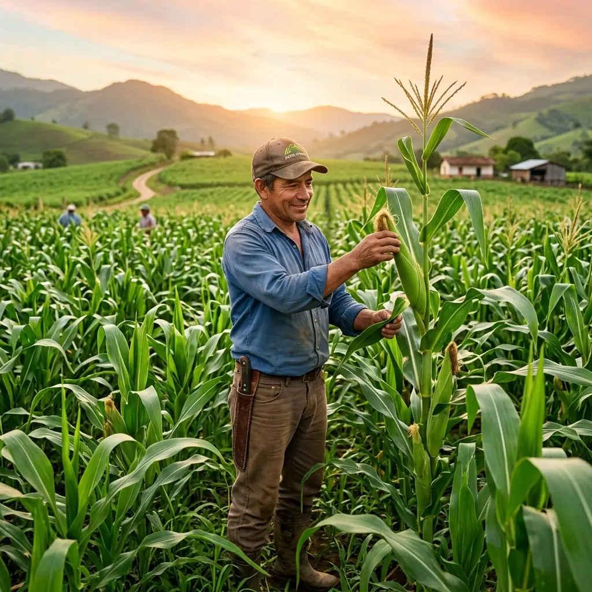
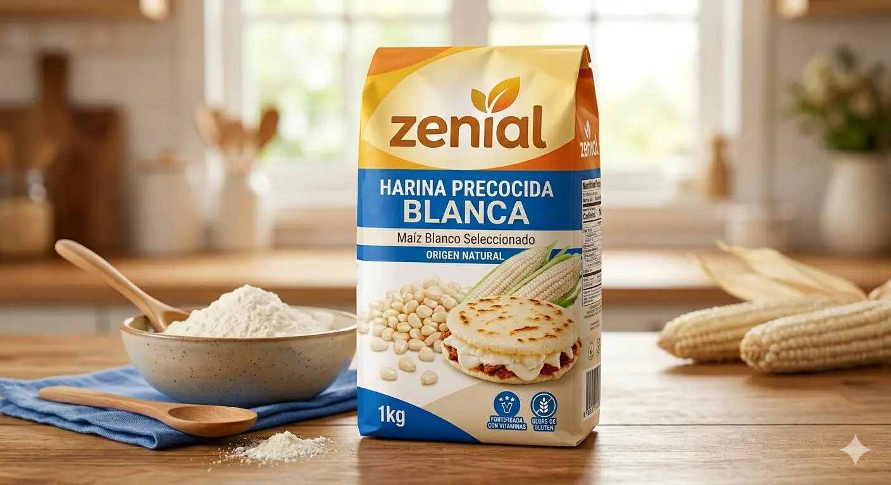
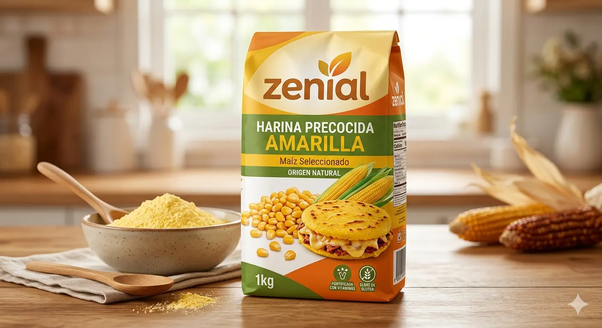
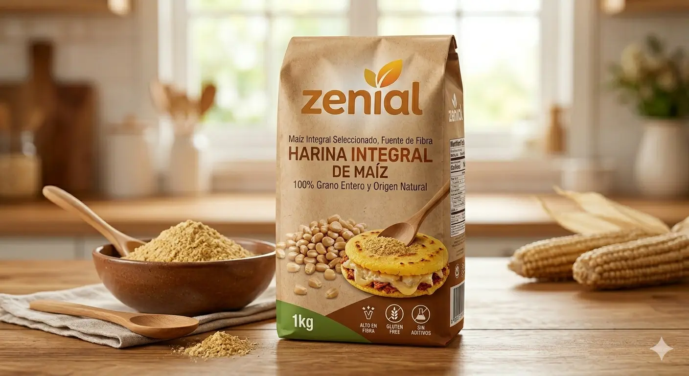

En Zenial transformamos el mejor maíz colombiano en harina de alta calidad. Innovación, sostenibilidad y tradición en cada grano.

Nacimos en el corazón de los llanos colombianos con una misión clara: dignificar el trabajo del campo y llevar alimentos de calidad a cada hogar.
Desde 2005, hemos crecido hasta convertirnos en referentes nacionales en el cultivo y procesamiento de maíz, combinando tradición agrícola con tecnología de vanguardia.
Más de dos décadas de trabajo comprometido con el campo colombiano
Línea completa de harinas de maíz con los más altos estándares de calidad alimentaria

Ideal para arepas, hallacas y tamales. Textura fina, cocción rápida y sabor auténtico colombiano.

Elaborada con maíz amarillo seleccionado. Color vibrante, mayor contenido de betacarotenos y sabor intenso.

Con todo el salvado del grano. Alta en fibra, vitaminas del complejo B y perfecta para dietas balanceadas.
Un proceso integrado, trazable y sostenible desde la siembra hasta tu mesa
Selección de semillas certificadas y preparación de suelos con técnicas agroecológicas.
Recolección mecanizada en el momento óptimo de madurez para garantizar calidad.
Limpieza, nixtamalización y molienda bajo estrictas normas BPM e INVIMA.
Empaque en ambiente controlado y distribución a nivel nacional e internacional.
Certificaciones y Reconocimientos
Contamos con capacidad de abastecimiento industrial y distribución nacional.
Hablemos de las necesidades de
tu empresa.